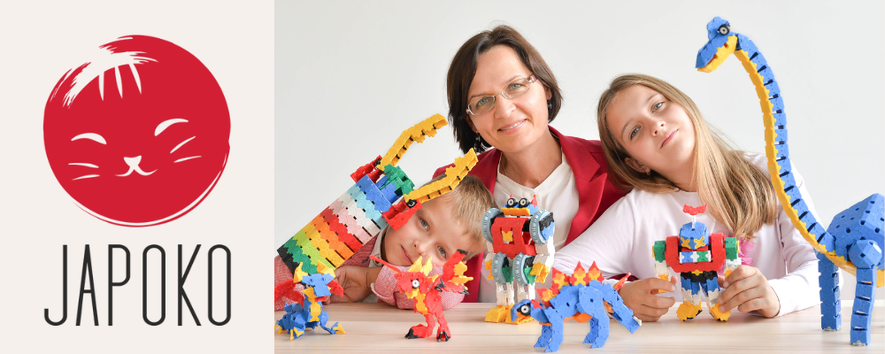

| 10+ METŲ ATRANKOS ● RYŠYS SU JAPONIJA |
 |
 |
KAS IŠLIEKA PO PIRMO ATRADIMO? DAIKTAI, KURIE
TAMPA KASDIENYBĖS DALIMIJAPOKO atranka prasideda ne nuo gražios pakuotės. Pirmiausia klausiame: ar daiktą malonu naudoti, ar jis išsprendžia tikrą problemą ir ar jo kokybę pajusite ne vieną kartą? |
10+ METŲ PATIRTIES | TIESIAI IŠ JAPONIJOS GAMINTOJŲ | ATRINKTA IŠBANDANT PATIEMS |
|
JŪSŲ PATIRTYS KODĖL SUGRĮŽTAMA?Žodžiai iš JAPOKO publikuotų LaQ atsiliepimų. |
TĖVŲ ATSILIEPIMAS „Šis žaidimas atitraukė mano vaiką nuo kompiuterio.“ | | PEDAGOGŲ ATSILIEPIMAS „Pedagogams – neišsemiamas lobynas.“ | | ŠEIMOS PATIRTIS „Investavome į vaikų kūrybiškumą bei motoriką.“ |
|
ATRASKITE SAVO KRYPTĮ NUO KO NORĖTUMĖTE PRADĖTI? |
|
GAL LAIKAS VĖL UŽSUKTI? |
 |
MB „Creator Japonicus“ · Bajorų g. 9, Migūnai, Vilniaus raj., LT-13243, Lietuva
japoko.com · info@japoko.com
Šį laišką gavote, nes anksčiau pirkote JAPOKO parduotuvėje.
Atsisakyti naujienlaiškio |